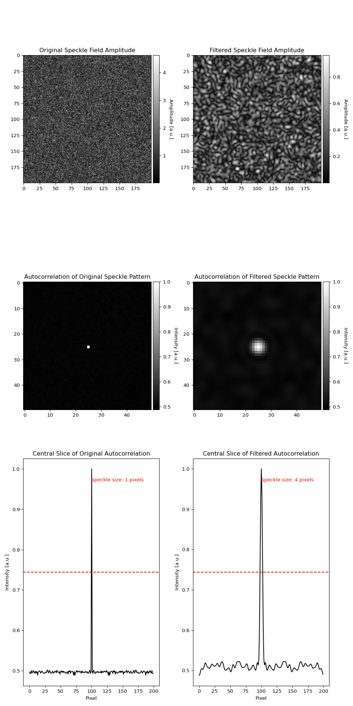
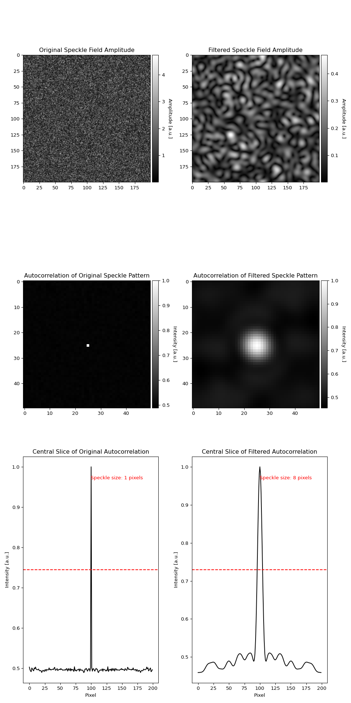
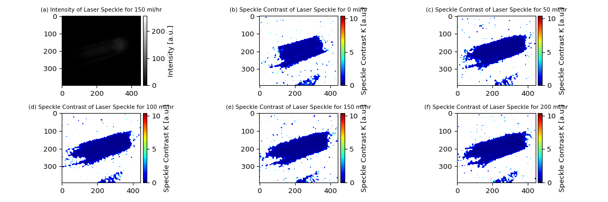

In Fig. 5.1, there is a positive, non-linear relationship between exposure time and pixel intensity. Initially there is a large increase in pixel intensity as exposure time increases and this is most likely because as exposure time increases, more photons will be detected by the pixels in the camera. As exposure time continues to increase, the increase in pixel intensity starts to decrease. This is most likely because the pixels can only hold a certain amount of photons and when a pixel has stored its maximum amount of photons, it has reached its saturation point. As more photons are being detected by the pixels from the increasing exposure times, the pixels are getting closer to their saturation point [1]. This plot also has a small error across the different trials, suggesting that the exposure times are precise.
Read and Plot Exposure Values
Show code from exposure_analysis.py
import pandas as pdimport numpy as npimport matplotlib.pyplot as pltfrom scipy.optimize import curve_fitdata1 = pd.read_excel("Data/exposure/lastExposure1.xlsx", sheet_name="Sheet2")data2 = pd.read_excel("Data/exposure/lastExposure2.xlsx", sheet_name="Sheet2")data3 = pd.read_excel("Data/exposure/lastExposure3.xlsx", sheet_name="Sheet2")data4 = pd.read_excel("Data/exposure/lastExposure4.xlsx", sheet_name="Sheet2")data5 = pd.read_excel("Data/exposure/lastExposure5.xlsx", sheet_name="Sheet2")# For Exposure Timesdata1_subsets = [data1.iloc[i:i+8].values.flatten() for i inrange(0, 45, 9)]data2_subsets = [data2.iloc[i:i+8].values.flatten() for i inrange(0, 45, 9)]data3_subsets = [data3.iloc[i:i+8].values.flatten() for i inrange(0, 45, 9)]data4_subsets = [data4.iloc[i:i+8].values.flatten() for i inrange(0, 45, 9)]data5_subsets = [data5.iloc[i:i+8].values.flatten() for i inrange(0, 45, 9)]# Calculate means and std for each subsetm_data1 = np.array([np.mean(subset) for subset in data1_subsets])m_data2 = np.array([np.mean(subset) for subset in data2_subsets])m_data3 = np.array([np.mean(subset) for subset in data3_subsets])m_data4 = np.array([np.mean(subset) for subset in data4_subsets])m_data5 = np.array([np.mean(subset) for subset in data5_subsets])s_data1 = np.array([np.std(subset) for subset in data1_subsets])s_data2 = np.array([np.std(subset) for subset in data2_subsets])s_data3 = np.array([np.std(subset) for subset in data3_subsets])s_data4 = np.array([np.std(subset) for subset in data4_subsets])s_data5 = np.array([np.std(subset) for subset in data5_subsets])# # Combine means and std of each numbered datameans = np.mean([m_data1, m_data2, m_data3, m_data4, m_data5], axis=0)stds = np.std([s_data1, s_data2, s_data3, s_data4, s_data5], axis=0)exp = [0.001, 0.005, 0.01, 0.05, 0.1]plt.figure()plt.errorbar(exp, means, yerr=stds, fmt='o', color='red', linewidth=2, markersize=6, label='Mean')plt.title('Brightness Level = 0.7')plt.suptitle('Pixel Intensity vs. Exposure Time')plt.ylim([0, 1100])plt.xlabel('Exposure Time [s]')plt.ylabel('Pixel Intensity [a.u.]')# Polynomial Fitcoeffs = np.polyfit(exp, means, 4)y_fit = np.polyval(coeffs, exp)plt.plot(exp, y_fit, 'r', linewidth=2)plt.savefig('images/exposure.png')plt.close()
Figure 5.1: The pixel intensity versus exposure time.
5.1.2 Changing Brightness Level
In both of the plots shown in Fig. 5.2, there is a positive trend between brightness level and pixel intensity. When the exposure time was set to 0.01 seconds (Fig. 5.2a), the pixel intensity increases linearly and then flattens out around 1023 arbitrary units. This number matches with the intensity when exposure time is 0.01 seconds in Fig. 5.1 above, suggesting that the exposure time has a significant impact on the resulting plot of brightness level vs pixel intensity. When the exposure time is increased to 0.1 seconds in Fig. 5.2b, the linear portion of the graph seems to shift to higher brightness levels and starts to flatten out around 1000 arbitrary units. This intensity value also agrees with the intensity value of an exposure time of 0.1 seconds in Fig. 5.1 above. The trend that this data supports is that the camera will most accurately capture LED brightness when the brightness level is low and the exposure time is quick and when the brightness level is high and the exposure time is slow. There is also a very small error across the different trials, suggesting that the camera is capturing the LED brightness precisely.
Read and Plot Brightness Values
Show code from brightness_analysis.py
import numpy as npimport pandas as pdimport matplotlib.pyplot as plt# Read the data from Sheet 2data1 = pd.read_excel("Data/brightness/lastBrightness1.xlsx", sheet_name="Sheet2")data2 = pd.read_excel("Data/brightness/lastBrightness2.xlsx", sheet_name="Sheet2")data3 = pd.read_excel("Data/brightness/lastBrightness3.xlsx", sheet_name="Sheet2")data4 = pd.read_excel("Data/brightness/lastBrightness4.xlsx", sheet_name="Sheet2")data5 = pd.read_excel("Data/brightness/lastBrightness5.xlsx", sheet_name="Sheet2")# For Brightness Levelsdata1_subsets = [data1.iloc[i:i+9].values.flatten() for i inrange(0, 99, 9)]data2_subsets = [data2.iloc[i:i+9].values.flatten() for i inrange(0, 99, 9)]data3_subsets = [data3.iloc[i:i+9].values.flatten() for i inrange(0, 99, 9)]data4_subsets = [data4.iloc[i:i+9].values.flatten() for i inrange(0, 99, 9)]data5_subsets = [data5.iloc[i:i+9].values.flatten() for i inrange(0, 99, 9)]# Calculate means and std for each subsetm_data1 = np.array([np.mean(subset) for subset in data1_subsets])m_data2 = np.array([np.mean(subset) for subset in data2_subsets])m_data3 = np.array([np.mean(subset) for subset in data3_subsets])m_data4 = np.array([np.mean(subset) for subset in data4_subsets])m_data5 = np.array([np.mean(subset) for subset in data5_subsets])s_data1 = np.array([np.std(subset) for subset in data1_subsets])s_data2 = np.array([np.std(subset) for subset in data2_subsets])s_data3 = np.array([np.std(subset) for subset in data3_subsets])s_data4 = np.array([np.std(subset) for subset in data4_subsets])s_data5 = np.array([np.std(subset) for subset in data5_subsets])# Combine means and std of each numbered datameans = np.mean([m_data1, m_data2, m_data3, m_data4, m_data5], axis=0)stds = np.std([s_data1, s_data2, s_data3, s_data4, s_data5], axis=0)bri = [0, 0.1, 0.2, 0.3, 0.4, 0.5, 0.6, 0.7, 0.8, 0.9, 1]# Plottingplt.figure()plt.errorbar(bri, means, yerr=stds, fmt='o', color='blue', linewidth=2, markersize=6, label='Mean')plt.title('Exposure Time = 0.01 s')plt.suptitle('Pixel Intensity vs. Brightness Level')plt.ylim([0, 1100])plt.xlabel('Brightness Level [a.u.]')plt.ylabel('Pixel Intensity [a.u.]')# Polynomial Fitcoeffs = np.polyfit(bri, means, 4)y_fit = np.polyval(coeffs, bri)plt.plot(bri, y_fit, 'b', linewidth=2)plt.savefig('images/brightness.png')plt.close()# Read the data from Sheet 2data1 = pd.read_excel("Data/brightness/B1.xlsx", sheet_name="Sheet2")data2 = pd.read_excel("Data/brightness/B2.xlsx", sheet_name="Sheet2")data3 = pd.read_excel("Data/brightness/B3.xlsx", sheet_name="Sheet2")data4 = pd.read_excel("Data/brightness/B4.xlsx", sheet_name="Sheet2")data5 = pd.read_excel("Data/brightness/B5.xlsx", sheet_name="Sheet2")# For Brightness Levelsdata1_subsets = [data1.iloc[i:i+9].values.flatten() for i inrange(0, 99, 9)]data2_subsets = [data2.iloc[i:i+9].values.flatten() for i inrange(0, 99, 9)]data3_subsets = [data3.iloc[i:i+9].values.flatten() for i inrange(0, 99, 9)]data4_subsets = [data4.iloc[i:i+9].values.flatten() for i inrange(0, 99, 9)]data5_subsets = [data5.iloc[i:i+9].values.flatten() for i inrange(0, 99, 9)]# Calculate means and std for each subsetm_data1 = np.array([np.mean(subset) for subset in data1_subsets])m_data2 = np.array([np.mean(subset) for subset in data2_subsets])m_data3 = np.array([np.mean(subset) for subset in data3_subsets])m_data4 = np.array([np.mean(subset) for subset in data4_subsets])m_data5 = np.array([np.mean(subset) for subset in data5_subsets])s_data1 = np.array([np.std(subset) for subset in data1_subsets])s_data2 = np.array([np.std(subset) for subset in data2_subsets])s_data3 = np.array([np.std(subset) for subset in data3_subsets])s_data4 = np.array([np.std(subset) for subset in data4_subsets])s_data5 = np.array([np.std(subset) for subset in data5_subsets])# Combine means and std of each numbered datameans = np.mean([m_data1, m_data2, m_data3, m_data4, m_data5], axis=0)stds = np.std([s_data1, s_data2, s_data3, s_data4, s_data5], axis=0)bri = [0, 0.1, 0.2, 0.3, 0.4, 0.5, 0.6, 0.7, 0.8, 0.9, 1]# Plottingplt.figure()plt.errorbar(bri, means, yerr=stds, fmt='o', color='blue', linewidth=2, markersize=6, label='Mean')plt.title('Exposure Time = 0.1 s')plt.suptitle('Pixel Intensity vs. Brightness Level')plt.ylim([0, 1100])plt.xlabel('Brightness Level [a.u.]')plt.ylabel('Pixel Intensity [a.u.]')# Polynomial Fitcoeffs = np.polyfit(bri, means, 4)y_fit = np.polyval(coeffs, bri)plt.plot(bri, y_fit, 'b', linewidth=2)plt.savefig('images/brightness2.png')plt.close()
a. The pixel intensity versus brightness level for an exposure time of 0.01s.
b. The pixel intensity versus brightness level for an exposure time of 0.1.
Figure 5.2
5.1.3 Measuring From a Photodiode
Both Fig. 5.3a and Fig. 5.3b depict a positive, non-linear relationship between brightness and wattage from the photodiode. Fig. 5.3a shows increasing brightness level from the NeoPixel controls while Figure 5.3b shows increasing tuple value, or color code value. The plots are extremely similar in both shape and in error. The error across the different trials are a lot larger than in Figuress 5.1 and 5.2. This is because the photodiode is measuring the actual LED output rather than what the camera is capturing the brightness to be. The LEDs being used are off the shelf and relatively cheap, so it was expected that they would be less precise than more expensive LED options.
Read and Plot Photodiode Values
Show code from FITC_analysis.py
import numpy as npimport matplotlib.pyplot as plt# Datalevel = [0, 0.1, 0.2, 0.3, 0.4, 0.5, 0.6, 0.7, 0.8, 0.9, 1]meanLevel = [0.566, 194.9, 373.5, 552, 687, 820, 964.3333333, 1063.333333, 1152, 1222, 1287.333333]stdLevel = [0.305, 20.22374842, 37.05738793, 56.15158057, 57.10516614, 67.44627492, 97.42860634, 105.6519443, 102.8931485, 101.7693471, 93.60199428]tuple_vals = [0, 25, 51, 76, 102, 127, 153, 178, 204, 229, 255]meanTuple = [0.566, 194.7, 384, 552, 710, 843, 961.3333333, 1061, 1148.333333, 1221, 1287.333333]stdTuple = [0.305, 19.43167517, 38.19685851, 53.3291665, 67.29041537, 76.92203845, 83.912653, 89.59910714, 92.1430048, 93.25770746, 93.60199428]# Plot for tuple valuesplt.figure()plt.errorbar(tuple_vals, meanTuple, yerr=stdTuple, fmt='ob', linewidth=2, markersize=6, markerfacecolor='b', label='Mean Tuple')# Polynomial fit for tuple valuesa1 = np.polyfit(tuple_vals, meanTuple, 2)y1 = np.polyval(a1, tuple_vals)plt.plot(tuple_vals, y1, 'b', linewidth=2)pStr1 ='y = {:.2f}x^2 + {:.2f}x + {:.2f}'.format(a1[0], a1[1], a1[2])# Calculate the residualsresiduals1 = meanTuple - y1# Calculate the total sum of squares (SStot)SStot1 = np.sum((meanTuple - np.mean(meanTuple))**2)# Calculate the sum of squares of residuals (SSres)SSres1 = np.sum(residuals1**2)# Calculate R-squaredR21 =1- (SSres1 / SStot1)# Display the resultspStr1R =f'R² = {R21:.4f}'plt.title('LED Output vs. Tuple Value for Brightness Level = 1')plt.xlabel('Tuple Value [a.u.]')plt.ylabel('LED Output [nW]')plt.xlim([0, 260])plt.ylim([0, 1400])xPos =max(tuple_vals) -150yPos =min(meanTuple) +200plt.text(xPos, yPos, pStr1, fontsize=12, color='b')plt.text(xPos, yPos-100, pStr1, fontsize=12, color='b')plt.legend()plt.savefig('images/photodiodeTuple.png')plt.close()# Plot for brightness levelsplt.figure()plt.errorbar(level, meanLevel, yerr=stdLevel, fmt='+r', linewidth=2, markersize=6, markerfacecolor='r', label='Mean Level')# Polynomial fit for brightness levelsa2 = np.polyfit(level, meanLevel, 2)y2 = np.polyval(a2, level)plt.plot(level, y2, 'r', linewidth=2)pStr2 ='y = {:.2f}x^2 + {:.2f}x + {:.2f}'.format(a2[0], a2[1], a2[2])# Calculate the residualsresiduals2 = meanLevel - y2# Calculate the total sum of squares (SStot)SStot2 = np.sum((meanLevel - np.mean(meanLevel))**2)# Calculate the sum of squares of residuals (SSres)SSres2 = np.sum(residuals2**2)# Calculate R-squaredR22 =1- (SSres2 / SStot2)# Display the resultspStr2R =f'R² = {R22:.4f}'plt.title('LED Output vs. Brightness Level for Brightness Tuple = (0,0,0,255)')plt.xlabel('Brightness Level [a.u.]')plt.ylabel('LED Output [nW]')plt.xlim([0, 1.1])plt.ylim([0, 1400])xPos =max(level) -0.6yPos =min(meanLevel) +200plt.text(xPos, yPos, pStr2, fontsize=12, color='r')plt.text(xPos, yPos-100, pStr2, fontsize=12, color='r')plt.legend()plt.savefig('images/photodiodeLevel.png')plt.close()
a. The photodiode pixel intensity versus color code for a brightness level of 1.
b. The photodiode pixel intensity versus brightness level for a color code of (0,0,0,255).
Figure 5.3
5.2 Flourescence Imaging
Fig. 5.5 shows the normalized pixel intensities of all ten concentrations of FITC for eight different exposure times. As exposure time and concentration increases, the pixel intensity also increases. The 100 milliseconds, or 0.1 seconds, exposure time best represents the expected relationship between concentration and pixel intensity (green curve). As seen in Fig. 5.6, the lower concentrations of FITC are a lot less fluorescent than the higher concentrations. The green curve in Fig. 5.5 shows a large increase in pixel intensity in the higher concentrations, with it flattening out at the maximum value of 1 in the normalized plot. This maximum value of 1 corresponds to 1023 arbitrary units. The slower exposure times (purple and blue curves) also show the trend to an extent. These larger exposure times mean that the images captured by the camera are super bright, so most of the concentrations have large intensity values. The faster exposure times have the opposite effect. The images captured by the camera are super dark, and the pixel intensity values are low. The intensity values for each concentration represent how fluorescent each concentration is. Based on this data, the higher concentrations of FITC are more fluorescent than the lower concentrations.
Figure 5.4: TThe pixel intensity versus FITC concentration for varying exposure times.
Figure 5.5: Fluorescent image of FITC concentrations in a well plate.
5.3 Laser Speckle Contrast Imaging
5.3.1 Simulation
Using the process described in Section 4.3.3, analysis on simulated speckle images and the effect of filtering was run. Fig. 5.7 depicts the simulated results for a filter with cutoff frequency of N/4, where N denotes the size of the speckle image in pixels, while Figures 5.8 and 5.9 show the results for cutoff frequency of N/8 and N/16, respectively.
Create a Simulated Speckle Image
Show code from speckleSimulation.py
# Import the necessary Python packagesimport numpy as npimport matplotlib.pyplot as pltfrom mpl_toolkits.axes_grid1 import make_axes_locatableimport osfrom PIL import Imagedef ft2(im):""" Takes the fourier transform """return np.fft.fftshift(np.fft.fft2(np.fft.ifftshift(im)))# Function for Inverse Fourier Transformdef ift2(im):""" Takes the inverse fourier transform """return np.fft.ifftshift(np.fft.ifft2(np.fft.fftshift(im)))# Generate a speckle patternN =200# Size of the speckle patterna = np.random.randn(N, N) +1j* np.random.randn(N, N)
Create a filter and apply it to the speckle image for cutoff frequency = N/4, then calculate the speckle size
Show code from speckleSimulation.py
# Compute amplitude, phase and intensity of the original speckle patternamplitude = np.abs(a)phase = np.angle(a)intensity = amplitude **2# Fourier transform of the speckle fieldA = ft2(a)# Create a circular low-pass filterx = np.linspace(-N/2, N/2, N)y = np.linspace(-N/2, N/2, N)X, Y = np.meshgrid(x, y)radius = np.sqrt(X**2+ Y**2)cutoff = N/4# Adjust the cutoff frequency to control the speckle sizefilter= radius < cutoff# Apply the low-pass filterA_filtered = A *filter# Inverse Fourier transform back to the spatial domaina_filtered = ift2(A_filtered)# Compute the amplitude, phase and intensity of the filtered speckle patternamplitude_filtered = np.abs(a_filtered)phase_filtered = np.angle(a_filtered)intensity_filtered = amplitude_filtered **2# Compute autocorrelation of the original and filtered speckle patternsautocorrelation_original = ift2(ft2(intensity) * np.conj(ft2(intensity)))autocorrelation_filtered = ift2(ft2(intensity_filtered) * np.conj(ft2(intensity_filtered)))autocorrelation_original = np.abs(autocorrelation_original) # Take the magnitudeautocorrelation_filtered = np.abs(autocorrelation_filtered) # Take the magnitude# Normalize the autocorrelations for better visualizationautocorrelation_original /= autocorrelation_original.max()autocorrelation_filtered /= autocorrelation_filtered.max()# The code below is for finding the speckle sizes of the images# Get the slice of the autocorrelation in line with the peakcentral_slice_original = autocorrelation_original[N//2, :]central_slice_filtered = autocorrelation_filtered[N//2, :]# Find the halfway point between the maximum and the steady statehalf_max_original = ((central_slice_original.max() - central_slice_original.min()) /2 ) + central_slice_original.min()half_max_filtered = ((central_slice_filtered.max() - central_slice_filtered.min()) /2 ) + central_slice_filtered.min()# Find all of the pixels above the halfway pointindices_original = np.where(central_slice_original >= half_max_original)[0]indices_filtered = np.where(central_slice_filtered >= half_max_filtered)[0]# Find the width of the peak at the halfway pointif indices_original.size ==1: speckle_size_original =1else: speckle_size_original = indices_original[-1] - indices_original[0]if indices_filtered.size ==1: speckle_size_filtered =1else: speckle_size_filtered = indices_filtered[-1] - indices_filtered[0]# Rayleigh Distribution for the amplitude histogramsflat = np.abs(amplitude.flatten())flat_fil = np.abs(amplitude_filtered.flatten())sigma = np.sqrt(np.mean(flat**2) /2)sigma_fil = np.sqrt(np.mean(flat_fil**2) /2)x = np.linspace(0, np.max(flat), 255)x_fil = np.linspace(0, np.max(flat_fil), 255)ray = (x / sigma**2) * np.exp(-x**2/ (2* sigma**2))ray_fil = (x_fil / sigma_fil**2) * np.exp(-x_fil**2/ (2* sigma_fil**2))# Zoom into the autocorrelationszoom =25center = np.array(autocorrelation_original.shape) //2center_fil = np.array(autocorrelation_filtered.shape) //2zoomRegion = (slice(center[0]-zoom, center[0]+zoom), slice(center[1]-zoom, center[1]+zoom))zoomRegion_fil = (slice(center_fil[0]-zoom, center_fil[0]+zoom), slice(center_fil[1]-zoom, center_fil[1]+zoom))autoZoom = autocorrelation_original[zoomRegion]autoZoom_fil = autocorrelation_filtered[zoomRegion_fil]def add_colorbar(him, ax, cbar_title=""):""" This function adds a nicely-formatted colorbar """ divider = make_axes_locatable(ax) cax = divider.append_axes("right", size="5%", pad=0.05) cbar = plt.colorbar(him, cax=cax) cbar.set_label(cbar_title, rotation=270, labelpad=15)# Fiure fo comparing the autocorrelations of the original and filtered speckle patternsfig, a = plt.subplots(ncols=2, nrows=3, figsize=(10,20))# Plot the original amplitudeim_amp = a[0, 0].imshow(amplitude, cmap='gray')a[0, 0].set_title('Original Speckle Field Amplitude')add_colorbar(im_amp, a[0, 0], "Amplitude [a.u.]")# Plot the filtered amplitudeim_amp_filtered = a[0, 1].imshow(amplitude_filtered, cmap='gray')a[0, 1].set_title('Filtered Speckle Field Amplitude')add_colorbar(im_amp_filtered, a[0, 1], "Amplitude [a.u.]")# Plot the autocorrelation of the original speckle patternim_autoZoom = a[1, 0].imshow(autoZoom, cmap='gray')a[1, 0].set_title('Autocorrelation of Original Speckle Pattern')add_colorbar(im_autoZoom, a[1, 0], "Intensity [a.u.]")# Plot the autocorrelation of the filtered speckle patternim_autoZoom_fil = a[1, 1].imshow(autoZoom_fil, cmap='gray')a[1, 1].set_title('Autocorrelation of Filtered Speckle Pattern')add_colorbar(im_autoZoom_fil, a[1, 1], "Intensity [a.u.]")# Plot the central slice of the original autocorrelation (zoomed)a[2,0].plot(central_slice_original, color='black')a[2,0].axhline(y=half_max_original, color='red', linestyle='--')a[2,0].set_title('Central Slice of Original Autocorrelation')a[2,0].set_xlabel('Pixel')a[2,0].set_ylabel('Intensity [a.u.]')a[2,0].text(0.5, 0.9, f'Speckle size: {speckle_size_original} pixels', color='red', transform=a[2,0].transAxes)# Plot the central slice of the filtered autocorrelation (zoomed)a[2,1].plot(central_slice_filtered, color='black')a[2,1].axhline(y=half_max_filtered, color='red', linestyle='--')a[2,1].set_title('Central Slice of Filtered Autocorrelation')a[2,1].set_xlabel('Pixel')a[2,1].set_ylabel('Intensity [a.u.]')a[2,1].text(0.5, 0.9, f'Speckle size: {speckle_size_filtered} pixels', color='red', transform=a[2,1].transAxes)# Adjust layoutplt.tight_layout()# Save the plotplt.savefig('images/LSCISimulation.png')plt.close(fig)
Figure 5.6: The simulated and filtered speckle images for cutoff frequency = N/4.
5.3.1.1 Cutoff Frequency = N/8
Show code from speckleSimulation.py
# Import the necessary Python packagesimport numpy as npimport matplotlib.pyplot as pltfrom mpl_toolkits.axes_grid1 import make_axes_locatableimport osfrom PIL import Imagedef ft2(im):""" Takes the fourier transform """return np.fft.fftshift(np.fft.fft2(np.fft.ifftshift(im)))# Function for Inverse Fourier Transformdef ift2(im):""" Takes the inverse fourier transform """return np.fft.ifftshift(np.fft.ifft2(np.fft.fftshift(im)))# Generate a speckle patternN =200# Size of the speckle patterna = np.random.randn(N, N) +1j* np.random.randn(N, N)# Compute amplitude, phase and intensity of the original speckle patternamplitude = np.abs(a)phase = np.angle(a)intensity = amplitude **2# Fourier transform of the speckle fieldA = ft2(a)# Create a circular low-pass filterx = np.linspace(-N/2, N/2, N)y = np.linspace(-N/2, N/2, N)X, Y = np.meshgrid(x, y)radius = np.sqrt(X**2+ Y**2)cutoff = N/8# Adjust the cutoff frequency to control the speckle sizefilter= radius < cutoff# Apply the low-pass filterA_filtered = A *filter# Inverse Fourier transform back to the spatial domaina_filtered = ift2(A_filtered)# Compute the amplitude, phase and intensity of the filtered speckle patternamplitude_filtered = np.abs(a_filtered)phase_filtered = np.angle(a_filtered)intensity_filtered = amplitude_filtered **2# Compute autocorrelation of the original and filtered speckle patternsautocorrelation_original = ift2(ft2(intensity) * np.conj(ft2(intensity)))autocorrelation_filtered = ift2(ft2(intensity_filtered) * np.conj(ft2(intensity_filtered)))autocorrelation_original = np.abs(autocorrelation_original) # Take the magnitudeautocorrelation_filtered = np.abs(autocorrelation_filtered) # Take the magnitude# Normalize the autocorrelations for better visualizationautocorrelation_original /= autocorrelation_original.max()autocorrelation_filtered /= autocorrelation_filtered.max()# The code below is for finding the speckle sizes of the images# Get the slice of the autocorrelation in line with the peakcentral_slice_original = autocorrelation_original[N//2, :]central_slice_filtered = autocorrelation_filtered[N//2, :]# Find the halfway point between the maximum and the steady statehalf_max_original = ((central_slice_original.max() - central_slice_original.min()) /2 ) + central_slice_original.min()half_max_filtered = ((central_slice_filtered.max() - central_slice_filtered.min()) /2 ) + central_slice_filtered.min()# Find all of the pixels above the halfway pointindices_original = np.where(central_slice_original >= half_max_original)[0]indices_filtered = np.where(central_slice_filtered >= half_max_filtered)[0]# Find the width of the peak at the halfway pointif indices_original.size ==1: speckle_size_original =1else: speckle_size_original = indices_original[-1] - indices_original[0]if indices_filtered.size ==1: speckle_size_filtered =1else: speckle_size_filtered = indices_filtered[-1] - indices_filtered[0]# Rayleigh Distribution for the amplitude histogramsflat = np.abs(amplitude.flatten())flat_fil = np.abs(amplitude_filtered.flatten())sigma = np.sqrt(np.mean(flat**2) /2)sigma_fil = np.sqrt(np.mean(flat_fil**2) /2)x = np.linspace(0, np.max(flat), 255)x_fil = np.linspace(0, np.max(flat_fil), 255)ray = (x / sigma**2) * np.exp(-x**2/ (2* sigma**2))ray_fil = (x_fil / sigma_fil**2) * np.exp(-x_fil**2/ (2* sigma_fil**2))# Zoom into the autocorrelationszoom =25center = np.array(autocorrelation_original.shape) //2center_fil = np.array(autocorrelation_filtered.shape) //2zoomRegion = (slice(center[0]-zoom, center[0]+zoom), slice(center[1]-zoom, center[1]+zoom))zoomRegion_fil = (slice(center_fil[0]-zoom, center_fil[0]+zoom), slice(center_fil[1]-zoom, center_fil[1]+zoom))autoZoom = autocorrelation_original[zoomRegion]autoZoom_fil = autocorrelation_filtered[zoomRegion_fil]def add_colorbar(him, ax, cbar_title=""):""" This function adds a nicely-formatted colorbar """ divider = make_axes_locatable(ax) cax = divider.append_axes("right", size="5%", pad=0.05) cbar = plt.colorbar(him, cax=cax) cbar.set_label(cbar_title, rotation=270, labelpad=15)# Fiure fo comparing the autocorrelations of the original and filtered speckle patternsfig, a = plt.subplots(ncols=2, nrows=3, figsize=(10,20))# Plot the original amplitudeim_amp = a[0, 0].imshow(amplitude, cmap='gray')a[0, 0].set_title('Original Speckle Field Amplitude')add_colorbar(im_amp, a[0, 0], "Amplitude [a.u.]")# Plot the filtered amplitudeim_amp_filtered = a[0, 1].imshow(amplitude_filtered, cmap='gray')a[0, 1].set_title('Filtered Speckle Field Amplitude')add_colorbar(im_amp_filtered, a[0, 1], "Amplitude [a.u.]")# Plot the autocorrelation of the original speckle patternim_autoZoom = a[1, 0].imshow(autoZoom, cmap='gray')a[1, 0].set_title('Autocorrelation of Original Speckle Pattern')add_colorbar(im_autoZoom, a[1, 0], "Intensity [a.u.]")# Plot the autocorrelation of the filtered speckle patternim_autoZoom_fil = a[1, 1].imshow(autoZoom_fil, cmap='gray')a[1, 1].set_title('Autocorrelation of Filtered Speckle Pattern')add_colorbar(im_autoZoom_fil, a[1, 1], "Intensity [a.u.]")# Plot the central slice of the original autocorrelation (zoomed)a[2,0].plot(central_slice_original, color='black')a[2,0].axhline(y=half_max_original, color='red', linestyle='--')a[2,0].set_title('Central Slice of Original Autocorrelation')a[2,0].set_xlabel('Pixel')a[2,0].set_ylabel('Intensity [a.u.]')a[2,0].text(0.5, 0.9, f'Speckle size: {speckle_size_original} pixels', color='red', transform=a[2,0].transAxes)# Plot the central slice of the filtered autocorrelation (zoomed)a[2,1].plot(central_slice_filtered, color='black')a[2,1].axhline(y=half_max_filtered, color='red', linestyle='--')a[2,1].set_title('Central Slice of Filtered Autocorrelation')a[2,1].set_xlabel('Pixel')a[2,1].set_ylabel('Intensity [a.u.]')a[2,1].text(0.5, 0.9, f'Speckle size: {speckle_size_filtered} pixels', color='red', transform=a[2,1].transAxes)# Adjust layoutplt.tight_layout()# Save the plotplt.savefig('images/LSCISimulation2.png')plt.close(fig)

Figure 5.7: The simulated and filtered speckle images for cutoff frequency = N/8.
5.3.1.2 Cutoff Frequency = N/16
Show code from speckleSimulation.py
# Import the necessary Python packagesimport numpy as npimport matplotlib.pyplot as pltfrom mpl_toolkits.axes_grid1 import make_axes_locatableimport osfrom PIL import Imagedef ft2(im):""" Takes the fourier transform """return np.fft.fftshift(np.fft.fft2(np.fft.ifftshift(im)))# Function for Inverse Fourier Transformdef ift2(im):""" Takes the inverse fourier transform """return np.fft.ifftshift(np.fft.ifft2(np.fft.fftshift(im)))# Generate a speckle patternN =200# Size of the speckle patterna = np.random.randn(N, N) +1j* np.random.randn(N, N)# Compute amplitude, phase and intensity of the original speckle patternamplitude = np.abs(a)phase = np.angle(a)intensity = amplitude **2# Fourier transform of the speckle fieldA = ft2(a)# Create a circular low-pass filterx = np.linspace(-N/2, N/2, N)y = np.linspace(-N/2, N/2, N)X, Y = np.meshgrid(x, y)radius = np.sqrt(X**2+ Y**2)cutoff = N/16# Adjust the cutoff frequency to control the speckle sizefilter= radius < cutoff# Apply the low-pass filterA_filtered = A *filter# Inverse Fourier transform back to the spatial domaina_filtered = ift2(A_filtered)# Compute the amplitude, phase and intensity of the filtered speckle patternamplitude_filtered = np.abs(a_filtered)phase_filtered = np.angle(a_filtered)intensity_filtered = amplitude_filtered **2# Compute autocorrelation of the original and filtered speckle patternsautocorrelation_original = ift2(ft2(intensity) * np.conj(ft2(intensity)))autocorrelation_filtered = ift2(ft2(intensity_filtered) * np.conj(ft2(intensity_filtered)))autocorrelation_original = np.abs(autocorrelation_original) # Take the magnitudeautocorrelation_filtered = np.abs(autocorrelation_filtered) # Take the magnitude# Normalize the autocorrelations for better visualizationautocorrelation_original /= autocorrelation_original.max()autocorrelation_filtered /= autocorrelation_filtered.max()# The code below is for finding the speckle sizes of the images# Get the slice of the autocorrelation in line with the peakcentral_slice_original = autocorrelation_original[N//2, :]central_slice_filtered = autocorrelation_filtered[N//2, :]# Find the halfway point between the maximum and the steady statehalf_max_original = ((central_slice_original.max() - central_slice_original.min()) /2 ) + central_slice_original.min()half_max_filtered = ((central_slice_filtered.max() - central_slice_filtered.min()) /2 ) + central_slice_filtered.min()# Find all of the pixels above the halfway pointindices_original = np.where(central_slice_original >= half_max_original)[0]indices_filtered = np.where(central_slice_filtered >= half_max_filtered)[0]# Find the width of the peak at the halfway pointif indices_original.size ==1: speckle_size_original =1else: speckle_size_original = indices_original[-1] - indices_original[0]if indices_filtered.size ==1: speckle_size_filtered =1else: speckle_size_filtered = indices_filtered[-1] - indices_filtered[0]# Rayleigh Distribution for the amplitude histogramsflat = np.abs(amplitude.flatten())flat_fil = np.abs(amplitude_filtered.flatten())sigma = np.sqrt(np.mean(flat**2) /2)sigma_fil = np.sqrt(np.mean(flat_fil**2) /2)x = np.linspace(0, np.max(flat), 255)x_fil = np.linspace(0, np.max(flat_fil), 255)ray = (x / sigma**2) * np.exp(-x**2/ (2* sigma**2))ray_fil = (x_fil / sigma_fil**2) * np.exp(-x_fil**2/ (2* sigma_fil**2))# Zoom into the autocorrelationszoom =25center = np.array(autocorrelation_original.shape) //2center_fil = np.array(autocorrelation_filtered.shape) //2zoomRegion = (slice(center[0]-zoom, center[0]+zoom), slice(center[1]-zoom, center[1]+zoom))zoomRegion_fil = (slice(center_fil[0]-zoom, center_fil[0]+zoom), slice(center_fil[1]-zoom, center_fil[1]+zoom))autoZoom = autocorrelation_original[zoomRegion]autoZoom_fil = autocorrelation_filtered[zoomRegion_fil]def add_colorbar(him, ax, cbar_title=""):""" This function adds a nicely-formatted colorbar """ divider = make_axes_locatable(ax) cax = divider.append_axes("right", size="5%", pad=0.05) cbar = plt.colorbar(him, cax=cax) cbar.set_label(cbar_title, rotation=270, labelpad=15)# Fiure fo comparing the autocorrelations of the original and filtered speckle patternsfig, a = plt.subplots(ncols=2, nrows=3, figsize=(10,20))# Plot the original amplitudeim_amp = a[0, 0].imshow(amplitude, cmap='gray')a[0, 0].set_title('Original Speckle Field Amplitude')add_colorbar(im_amp, a[0, 0], "Amplitude [a.u.]")# Plot the filtered amplitudeim_amp_filtered = a[0, 1].imshow(amplitude_filtered, cmap='gray')a[0, 1].set_title('Filtered Speckle Field Amplitude')add_colorbar(im_amp_filtered, a[0, 1], "Amplitude [a.u.]")# Plot the autocorrelation of the original speckle patternim_autoZoom = a[1, 0].imshow(autoZoom, cmap='gray')a[1, 0].set_title('Autocorrelation of Original Speckle Pattern')add_colorbar(im_autoZoom, a[1, 0], "Intensity [a.u.]")# Plot the autocorrelation of the filtered speckle patternim_autoZoom_fil = a[1, 1].imshow(autoZoom_fil, cmap='gray')a[1, 1].set_title('Autocorrelation of Filtered Speckle Pattern')add_colorbar(im_autoZoom_fil, a[1, 1], "Intensity [a.u.]")# Plot the central slice of the original autocorrelation (zoomed)a[2,0].plot(central_slice_original, color='black')a[2,0].axhline(y=half_max_original, color='red', linestyle='--')a[2,0].set_title('Central Slice of Original Autocorrelation')a[2,0].set_xlabel('Pixel')a[2,0].set_ylabel('Intensity [a.u.]')a[2,0].text(0.5, 0.9, f'Speckle size: {speckle_size_original} pixels', color='red', transform=a[2,0].transAxes)# Plot the central slice of the filtered autocorrelation (zoomed)a[2,1].plot(central_slice_filtered, color='black')a[2,1].axhline(y=half_max_filtered, color='red', linestyle='--')a[2,1].set_title('Central Slice of Filtered Autocorrelation')a[2,1].set_xlabel('Pixel')a[2,1].set_ylabel('Intensity [a.u.]')a[2,1].text(0.5, 0.9, f'Speckle size: {speckle_size_filtered} pixels', color='red', transform=a[2,1].transAxes)# Adjust layoutplt.tight_layout()# Save the plotplt.savefig('images/LSCISimulation3.png')plt.close(fig)

Figure 5.8: The simulated and filtered speckle images for cutoff frequency= N/16.
As the cutoff frequency decreases, the size of the speckle in pixels increases. The original speckle pattern has a speckle size of 1. A cutoff frequency of N/4 results in a filtered speckle size of 2 pixels, N/8 results in a filtered speckle size of 4 pixels, and N/16 results in a filtered speckle size of 8 pixels, as shown in Figures 5.7, 5.8, and 5.9. This implies that the filter size directly affects the resulting speckle size and a more narrow filter will produce a lower resolution image, but may decrease the noise in the speckle pattern. Additionally, as the filter’s cutoff frequency decreases, the amplitude histogram of the filtered patterns intensity decreases. Fig. 5.7 shows a normalized amplitude peak at approximately 1 for a cutoff frequency of N/4, while Fig. 5.9 shows an amplitude peak at 0.1 for a cutoff frequency of N/16. The simulated results also show an increase in autocorrelation with a decrease in cutoff frequency. The change in autocorrelation is indicative of the change in speckle size across the simulations. In real-world applications, an increase in autocorrelation across images may also imply differences in the subject’s roughness or uniformity.
5.3.2 Physical Tests
The LSCI analysis script was run on images with a cream and water mixture running through the tube at flow rates of 0 ml/hr, 50 ml/hr, 100 ml/hr, 150 ml/hr, and 200 ml/hr. The resulting speckle images, LSCI reproductions and LSCI K values are shown in Fig. 5.10 and Table 5.1. While there is a general decreasing trend in the K values as flow rate decreases, there are discrepancies from value to value.
Finding the moving LSCI K value for a 0.001s exposure time
Show code from speckle_an.py
from PIL import Imageimport numpy as npimport matplotlib.pyplot as pltfrom mpl_toolkits.axes_grid1 import make_axes_locatableimport cv2from scipy.ndimage import gaussian_filterimport osimport pandas as pd# Load BMP image and convert to grayscale numpy arraydef load_and_normalize_image(image_path): img = Image.open(image_path).convert('L') img_array = np.array(img)# Normalize the image to range [0, 1] img_normalized = img_array /255.0return img_normalized# Function for Fourier Transformdef ft2(im):return np.fft.fftshift(np.fft.fft2(np.fft.ifftshift(im)))# Function for Inverse Fourier Transformdef ift2(im):return np.fft.ifftshift(np.fft.ifft2(np.fft.fftshift(im)))# Calculate speckle contrastdef calcSpeckleContrast(image_path): x1 =2150; x2 =2600 y1 =1200; y2 =1600 image = plt.imread(image_path) intensity = np.asarray(image[y1:y2, x1:x2]) photo = gaussian_filter(intensity, 2) window = photo[:][:] w_dev = np.std(window) w_meanInt = np.mean(window) w_speckle_contrast = w_dev / w_meanInt # the selection of SQUARE x SQUARE pixels where speckle will be calculated SQUARE =7# convert photo into an np array pArr = np.asarray(photo)# the speckle contrast array that will be returned contrast_array = [ [0]*(len(pArr[0])-SQUARE) for i inrange((len(pArr))-SQUARE) ] conMin = np.inf;# The Loop Does the Following:# goes through 7x7 selections of the image# computes the speckle contrast for this region# using this comparison, create a new matrix with values whose magnitude# decreases depending on how "blurry" the selection isfor r inrange(len(pArr) - SQUARE):for c inrange(len(pArr[0]) - SQUARE): x1 = r; x2 = r+SQUARE-1 y1 = c; y2 = c+SQUARE-1 selection = pArr[x1:x2, y1:y2] s_dev = np.std(selection) s_meanInt = np.mean(selection)# to cut out values outside of the speckle caught on camera#if (s_meanInt <= 0.1 and s_dev <= 0.1):# contrast_array[r][c] = np.NaN#else: s_speckle_contrast = s_dev / s_meanIntif s_speckle_contrast < conMin and s_speckle_contrast !=0: conMin = s_speckle_contrast contrast_array[r][c] = s_speckle_contrast conArr = np.asarray(contrast_array) conArr[conArr ==0] = conMinreturn (w_speckle_contrast, contrast_array)def calcSpeckleContrastVal(image_path): x1 =2150; x2 =2600 y1 =1200; y2 =1600 image = plt.imread(image_path) intensity = np.asarray(image[y1:y2, x1:x2]) stat_x1 =0; stat_x2 =50 stat_y1 =0; stat_y2=50 mov_x1 =0; mov_x2 =50 mov_y1 =200; mov_y2 =250 filtered = gaussian_filter(intensity, 2) static_window = np.asarray(filtered[stat_y1:stat_y2,stat_x1:stat_x2]) stat_con = np.std(static_window) / np.mean(static_window) moving_window = np.asarray(filtered[mov_y1:mov_y2,mov_x1:mov_x2]) move_con = np.std(moving_window) / np.mean(moving_window)return (move_con, stat_con)def process_images(folder_path): results = {}# Iterate through the folder and process imagesfor filename in os.listdir(folder_path):if filename.endswith('.bmp'):# Extract flowrate and exposure time from the filename parts = filename.split('_') flowrate = parts[1] # Assuming flowrate is the first part exposure_time = parts[2] # Assuming exposure time is the second part# Initialize the flowrate in results dictionary if not alreadyif flowrate notin results: results[flowrate] = {}# Initialize the exposure time in the flowrate dictionary if not alreadyif exposure_time notin results[flowrate]: results[flowrate][exposure_time] = []# Get the LSCI from the image move_con, stat_con = calcSpeckleContrastVal(os.path.join(folder_path, filename)) results[flowrate][exposure_time].append(move_con)# Calculate the average for each exposure time within each flowrate averages = {} stds = {}for flowrate, exposure_times in results.items(): averages[flowrate] = {}for exposure_time, values in exposure_times.items(): averages[flowrate][exposure_time] = np.mean(values)# Convert results to DataFrame for saving df = pd.DataFrame.from_dict({(flowrate, exposure_time): avg for flowrate, exposure_times in averages.items() for exposure_time, avg in exposure_times.items()}, orient='index', columns=['Average Value']).reset_index()# Split the MultiIndex into separate columns df[['Flowrate', 'Exposure Time']] = pd.DataFrame(df['index'].tolist(), index=df.index)# Drop the original index column df.drop('index', axis=1, inplace=True)# Rearrange columns df = df[['Flowrate', 'Exposure Time', 'Average Value']] df.to_csv(folder_path +'/averages.csv', index=False)# RUN CODEfolder_path ='Data/0.001s'process_images(folder_path)#| label: tbl-planets#| tbl-cap: Average K value for 0.001s Exposure Timefrom IPython.display import Markdownfrom tabulate import tabulate# Display the csv as a Markdown tabletable = pd.read_csv('Data/0.001s/averages.csv')display(Markdown("##### Table 5.1: Average K Values for 0.001s Exposure Tim {.unnumbered}"))Markdown(tabulate( table, headers=["Flowrate [ml/hr]","Exposure Time [s]", "Average K [a.u.]"]))
Table 5.1: Average K Values for 0.001s Exposure Tim
Flowrate [ml/hr]
Exposure Time [s]
Average K [a.u.]
0
200ml
0.001
0.365206
1
50ml
0.001
0.367474
2
100ml
0.001
0.332304
3
0ml
0.001
0.365184
4
238ml
0.001
0.359352
5
150ml
0.001
0.371385
Finding the LSCI Reproduction of Different Flowrates for a 0.001s exposure time
Show code from speckle_an.py
image_path1 ='Data/0.001s/LSCI_0ml_0.001_1.bmp'image_path2 ='Data/0.001s/LSCI_50ml_0.001_1.bmp'image_path3 ='Data/0.001s/LSCI_100ml_0.001_1.bmp'image_path4 ='Data/0.001s/LSCI_150ml_0.001_1.bmp'image_path5 ='Data/0.001s/LSCI_200ml_0.001_1.bmp'x1 =2150; x2 =2600y1 =1200; y2 =1600# Plot the Original Speckle Imageoriginal = Image.open(image_path4).convert('L')og_int = np.asarray(original)og_int = og_int[y1:y2, x1:x2]# Plot the speckle contrast(cont1, contrast_array1) = calcSpeckleContrast(image_path1)(cont2, contrast_array2) = calcSpeckleContrast(image_path2)(cont3, contrast_array3) = calcSpeckleContrast(image_path3)(cont4, contrast_array4) = calcSpeckleContrast(image_path4)(cont5, contrast_array5) = calcSpeckleContrast(image_path5)fig, ax = plt.subplots(nrows=2, ncols=3, figsize=(12, 4))im0 = ax[0,0].imshow(og_int, cmap ='gray', vmin=0, vmax=255)ax[0,0].set_title("(a) Intensity of Laser Speckle for 150 ml/hr", fontsize =8)divider0 = make_axes_locatable(ax[0, 0])cax0 = divider0.append_axes("right", size="5%", pad=0.05)cbar0 = fig.colorbar(im0, cax=cax0)cbar0.set_label('Intensity [a.u.]')im1 = ax[0,1].imshow(contrast_array1, cmap ="jet")ax[0,1].set_title(f'(b) Speckle Contrast of Laser Speckle for 0 ml/hr', fontsize =8)divider1 = make_axes_locatable(ax[0, 1])cax1 = divider1.append_axes("right", size="5%", pad=0.05)cbar1 = fig.colorbar(im1, cax=cax1)cbar1.set_label('Speckle Contrast K [a.u.]')im2 = ax[0,2].imshow(contrast_array2, cmap ="jet")ax[0,2].set_title(f'(c) Speckle Contrast of Laser Speckle for 50 ml/hr', fontsize =8)divider2 = make_axes_locatable(ax[0, 2])cax2 = divider2.append_axes("right", size="5%", pad=0.05)cbar2 = fig.colorbar(im2, cax=cax2)cbar2.set_label('Speckle Contrast K [a.u.]')im3 = ax[1,0].imshow(contrast_array3, cmap ="jet")ax[1,0].set_title(f'(d) Speckle Contrast of Laser Speckle for 100 ml/hr', fontsize =8)divider3 = make_axes_locatable(ax[1,0])cax3 = divider3.append_axes("right", size="5%", pad=0.05)cbar3 = fig.colorbar(im3, cax=cax3)cbar3.set_label('Speckle Contrast K [a.u.]')im4 = ax[1,1].imshow(contrast_array4, cmap ="jet")ax[1,1].set_title(f'(e) Speckle Contrast of Laser Speckle for 150 ml/hr', fontsize =8)divider4 = make_axes_locatable(ax[1,1])cax4 = divider4.append_axes("right", size="5%", pad=0.05)cbar4 = fig.colorbar(im4, cax=cax4)cbar4.set_label('Speckle Contrast K [a.u.]')im5 = ax[1,2].imshow(contrast_array5, cmap ="jet")ax[1,2].set_title(f'(f) Speckle Contrast of Laser Speckle for 200 ml/hr', fontsize =8)divider5 = make_axes_locatable(ax[1,2])cax5 = divider5.append_axes("right", size="5%", pad=0.05)cbar5 = fig.colorbar(im5, cax=cax5)cbar5.set_label('Speckle Contrast K [a.u.]')# Adjust layoutplt.tight_layout()# Save the plotplt.savefig('images/LSCIReal.png')plt.close(fig)
Figure 5.9: The real-world results for LSCI on a 150 ml/hr fluid for an exposure time of 0.001s.
One potential reason for this discrepancy is in the exposure time used to capture the speckle images. Fig. 5.11 and Table 5.2 show the same calculations run on an exposure time with a lower exposure time of 0.0008s instead of 0.001s. The resulting values and LSCI reproductions produce similiar issues, signifying that the error lies somewhere else in the experimental setup or analysis.
Finding the moving LSCI K value for a 0.0008s exposure time
Show code from speckle_an.py
from PIL import Imageimport numpy as npimport matplotlib.pyplot as pltfrom mpl_toolkits.axes_grid1 import make_axes_locatableimport cv2from scipy.ndimage import gaussian_filterimport osimport pandas as pd# Load BMP image and convert to grayscale numpy arraydef load_and_normalize_image(image_path): img = Image.open(image_path).convert('L') img_array = np.array(img)# Normalize the image to range [0, 1] img_normalized = img_array /255.0return img_normalized# Function for Fourier Transformdef ft2(im):return np.fft.fftshift(np.fft.fft2(np.fft.ifftshift(im)))# Function for Inverse Fourier Transformdef ift2(im):return np.fft.ifftshift(np.fft.ifft2(np.fft.fftshift(im)))# Calculate speckle contrastdef calcSpeckleContrast(image_path): x1 =2150; x2 =2600 y1 =1200; y2 =1600 image = plt.imread(image_path) intensity = np.asarray(image[y1:y2, x1:x2]) photo = gaussian_filter(intensity, 2) window = photo[:][:] w_dev = np.std(window) w_meanInt = np.mean(window) w_speckle_contrast = w_dev / w_meanInt # the selection of SQUARE x SQUARE pixels where speckle will be calculated SQUARE =7# convert photo into an np array pArr = np.asarray(photo)# the speckle contrast array that will be returned contrast_array = [ [0]*(len(pArr[0])-SQUARE) for i inrange((len(pArr))-SQUARE) ] conMin = np.inf;# The Loop Does the Following:# goes through 7x7 selections of the image# computes the speckle contrast for this region# using this comparison, create a new matrix with values whose magnitude# decreases depending on how "blurry" the selection isfor r inrange(len(pArr) - SQUARE):for c inrange(len(pArr[0]) - SQUARE): x1 = r; x2 = r+SQUARE-1 y1 = c; y2 = c+SQUARE-1 selection = pArr[x1:x2, y1:y2] s_dev = np.std(selection) s_meanInt = np.mean(selection)# to cut out values outside of the speckle caught on camera#if (s_meanInt <= 0.1 and s_dev <= 0.1):# contrast_array[r][c] = np.NaN#else: s_speckle_contrast = s_dev / s_meanIntif s_speckle_contrast < conMin and s_speckle_contrast !=0: conMin = s_speckle_contrast contrast_array[r][c] = s_speckle_contrast conArr = np.asarray(contrast_array) conArr[conArr ==0] = conMinreturn (w_speckle_contrast, contrast_array)def calcSpeckleContrastVal(image_path): x1 =2150; x2 =2600 y1 =1200; y2 =1600 image = plt.imread(image_path) intensity = np.asarray(image[y1:y2, x1:x2]) stat_x1 =0; stat_x2 =50 stat_y1 =0; stat_y2=50 mov_x1 =0; mov_x2 =50 mov_y1 =200; mov_y2 =250 filtered = gaussian_filter(intensity, 2) static_window = np.asarray(filtered[stat_y1:stat_y2,stat_x1:stat_x2]) stat_con = np.std(static_window) / np.mean(static_window) moving_window = np.asarray(filtered[mov_y1:mov_y2,mov_x1:mov_x2]) move_con = np.std(moving_window) / np.mean(moving_window)return (move_con, stat_con)def process_images(folder_path): results = {}# Iterate through the folder and process imagesfor filename in os.listdir(folder_path):if filename.endswith('.bmp'):# Extract flowrate and exposure time from the filename parts = filename.split('_') flowrate = parts[1] # Assuming flowrate is the first part exposure_time = parts[2] # Assuming exposure time is the second part# Initialize the flowrate in results dictionary if not alreadyif flowrate notin results: results[flowrate] = {}# Initialize the exposure time in the flowrate dictionary if not alreadyif exposure_time notin results[flowrate]: results[flowrate][exposure_time] = []# Get the LSCI from the image move_con, stat_con = calcSpeckleContrastVal(os.path.join(folder_path, filename)) results[flowrate][exposure_time].append(move_con)# Calculate the average for each exposure time within each flowrate averages = {} stds = {}for flowrate, exposure_times in results.items(): averages[flowrate] = {}for exposure_time, values in exposure_times.items(): averages[flowrate][exposure_time] = np.mean(values)# Convert results to DataFrame for saving df = pd.DataFrame.from_dict({(flowrate, exposure_time): avg for flowrate, exposure_times in averages.items() for exposure_time, avg in exposure_times.items()}, orient='index', columns=['Average Value']).reset_index()# Split the MultiIndex into separate columns df[['Flowrate', 'Exposure Time']] = pd.DataFrame(df['index'].tolist(), index=df.index)# Drop the original index column df.drop('index', axis=1, inplace=True)# Rearrange columns df = df[['Flowrate', 'Exposure Time', 'Average Value']] df.to_csv(folder_path +'/averages.csv', index=False)# RUN CODEfolder_path ='Data/0.0008s'process_images(folder_path)#| label: tbl-planets#| tbl-cap: Average K value for 0.0008s Exposure Timefrom IPython.display import Markdownfrom tabulate import tabulate# Display the csv as a Markdown tabletable = pd.read_csv('Data/0.0008s/averages.csv')display(Markdown("##### Table 5.2: Average K Values for 0.0008s Exposure Tim {.unnumbered}"))Markdown(tabulate( table, headers=["Flowrate [ml/hr]","Exposure Time [s]", "Average K [a.u.]"]))
Finding the LSCI Reproduction of Different Flowrates for a 0.0008s exposure time
Show code from speckle_an.py
image_path1 ='Data/0.0008s/LSCI_0ml_0.0008_1.bmp'image_path2 ='Data/0.0008s/LSCI_50ml_0.0008_1.bmp'image_path3 ='Data/0.0008s/LSCI_100ml_0.0008_1.bmp'image_path4 ='Data/0.0008s/LSCI_150ml_0.0008_1.bmp'image_path5 ='Data/0.0008s/LSCI_200ml_0.0008_1.bmp'x1 =2150; x2 =2600y1 =1200; y2 =1600# Plot the Original Speckle Imageoriginal = Image.open(image_path4).convert('L')og_int = np.asarray(original)og_int = og_int[y1:y2, x1:x2]# Plot the speckle contrast(cont1, contrast_array1) = calcSpeckleContrast(image_path1)(cont2, contrast_array2) = calcSpeckleContrast(image_path2)(cont3, contrast_array3) = calcSpeckleContrast(image_path3)(cont4, contrast_array4) = calcSpeckleContrast(image_path4)(cont5, contrast_array5) = calcSpeckleContrast(image_path5)fig, ax = plt.subplots(nrows=2, ncols=3, figsize=(12, 4))im0 = ax[0,0].imshow(og_int, cmap ='gray', vmin=0, vmax=255)ax[0,0].set_title("(a) Intensity of Laser Speckle for 150 ml/hr", fontsize =8)divider0 = make_axes_locatable(ax[0, 0])cax0 = divider0.append_axes("right", size="5%", pad=0.05)cbar0 = fig.colorbar(im0, cax=cax0)cbar0.set_label('Intensity [a.u.]')im1 = ax[0,1].imshow(contrast_array1, cmap ="jet")ax[0,1].set_title(f'(b) Speckle Contrast of Laser Speckle for 0 ml/hr', fontsize =8)divider1 = make_axes_locatable(ax[0, 1])cax1 = divider1.append_axes("right", size="5%", pad=0.05)cbar1 = fig.colorbar(im1, cax=cax1)cbar1.set_label('Speckle Contrast K [a.u.]')im2 = ax[0,2].imshow(contrast_array2, cmap ="jet")ax[0,2].set_title(f'(c) Speckle Contrast of Laser Speckle for 50 ml/hr', fontsize =8)divider2 = make_axes_locatable(ax[0, 2])cax2 = divider2.append_axes("right", size="5%", pad=0.05)cbar2 = fig.colorbar(im2, cax=cax2)cbar2.set_label('Speckle Contrast K [a.u.]')im3 = ax[1,0].imshow(contrast_array3, cmap ="jet")ax[1,0].set_title(f'(d) Speckle Contrast of Laser Speckle for 100 ml/hr', fontsize =8)divider3 = make_axes_locatable(ax[1,0])cax3 = divider3.append_axes("right", size="5%", pad=0.05)cbar3 = fig.colorbar(im3, cax=cax3)cbar3.set_label('Speckle Contrast K [a.u.]')im4 = ax[1,1].imshow(contrast_array4, cmap ="jet")ax[1,1].set_title(f'(e) Speckle Contrast of Laser Speckle for 150 ml/hr', fontsize =8)divider4 = make_axes_locatable(ax[1,1])cax4 = divider4.append_axes("right", size="5%", pad=0.05)cbar4 = fig.colorbar(im4, cax=cax4)cbar4.set_label('Speckle Contrast K [a.u.]')im5 = ax[1,2].imshow(contrast_array5, cmap ="jet")ax[1,2].set_title(f'(f) Speckle Contrast of Laser Speckle for 200 ml/hr', fontsize =8)divider5 = make_axes_locatable(ax[1,2])cax5 = divider5.append_axes("right", size="5%", pad=0.05)cbar5 = fig.colorbar(im5, cax=cax5)cbar5.set_label('Speckle Contrast K [a.u.]')# Adjust layoutplt.tight_layout()# Save the plotplt.savefig('images/LSCIReal2.png')plt.close(fig)

Figure 5.10: The real-world results for LSCI on a 150 ml/hr fluid for a 0.0008s exposure time.
Another source of error might be the camera used to take the speckle images. The Arducam IMX519 camera is able to take high quality images with regular lighting conditions, but it is possible that it does not have the resolution and sensitivity needed for LSCI. A possible replacement for the Arducam camera is a Raspberry Pi High Quality (HQ) camera which could be implemented with the same code as the Arducam camera. This has the potential to reach more conclusive results. Alternatively, an Industrial camera designed for taking speckle images may prove more effective, but not as cost effective as a Raspberry Pi camera.
Lastly, better filtering or image processing may assist in more accurate LSCI computation. The python scripts used in this project implemented the scipy Python library’s gaussian filter to produce a filtered speckle image before calculating the LSCI. Gaussian filters are a widely used filter in image processing for smoothing and noise reduction. It uses a gaussian kernel to perform a weighted average of the neighboring pixels around a central pixel, where the standard deviation of the gaussian kernel signifies the level of smoothing. Altering the gaussian fit or using a spatial filter as discussed in Brier et. al’s paper [2] may prove more effective for future LSCI applications in the OpenIVIS system. Additionally, the window in which the moving and static LSCI data is being taken from may be innacurate and require a different location.
5.4 Additional Capabilities
The system was successful in taking time lapse images over an extended period of time and could be used for a broad range of biological imaging applications. The time lapse of the Tobacco Hornworm growth resulted in 45 images over the span of 9 days, with 5 hours between each image. An example of one week’s worth of growth is shown in Fig. 5.11.
Figure 5.11: A week’s worth of growth from one hornworm.
The OpenIVIS system was able to take images of lettuce leaf decomposition over a three day period. The response imaged on the 1st day is shown in Fig. 12a and the 3rd day in Fig. 12b. The 3rd day shows a significantly NDIA response when compared to the first day, indicating a change in fluorescence output from the lettuce leaf. While the difference in response was imaged, due to limited documentation on how to conduct this experiment, the experimental process and calculations used may be incorrect. An accurate depiction of this trial is shown in the system’s previous publication by Branning et. al [3].
Show code from anthComp.py
import cv2import numpy as npimport matplotlib.pyplot as pltimport osimport cv2import pandas as pddef plot_log_ratio_heatmap(log_ratio, save_path):""" Function to plot and save the color map of the Anthocyanin response. Arguments: log_ratio: A numpy array of the Anthocyanin response save_path: A string with the desired file saving path Returns: N/A """# Plot the log ratio color map plt.figure(figsize=(8, 6)) plt.imshow(log_ratio, cmap='cool', interpolation='nearest', vmin =0, vmax =3) plt.colorbar(label='NDIA') plt.title(' Ratio Heat Map') plt.axis('off')# Save the log ratio color map plt.savefig(save_path, dpi=300, bbox_inches='tight') plt.close()def load_image(image_path):""" Function to load an image as a numpy array. Arguments: image_path: A string with the file path for an image Returns: image: The image loaded as grayscale """ image = cv2.imread(image_path, cv2.IMREAD_GRAYSCALE)if image isNone:raiseException(f"Could not load image from {image_path}")return imagedef compute_anth(red_excitation, green_excitation):""" Function to compute the Anthocyanin response. Arguments: red_excitation: The loaded image with red excitation light green_excitation: The loaded image with green excitation light Returns: NDAI: Thenormalized difference Anthocyanin index """# Read the images as 64-bit numpy arrays red = np.float64(red_excitation) green = np.float64(green_excitation) np.errstate(divide='ignore', invalid='ignore') # Ignore the zero values in the arrays red[np.isnan(red)] =0.0# Replace Nan's with zeroes green[np.isnan(green)] =0.0# Replace Nan's with zeroes rgadd = np.add(red,green) # Add the red and green images together rgsub = np.subtract(red,green) # Subtract the green channel from the red channel red[red ==0] =1e-6# Replace zeroes with 1e-6 green[green ==0] =1e-6# Replace zeroes with 1e-6 NDAI = np.log(np.divide(rgadd, rgsub)) # Calculate the NDAI valuereturn NDAI# Load the red and green images for the 3rd dayimage1_path1 ='images/day3Red_Red_1.000_0.100_5.000.png'# Replace if necessaryimage2_path1 ='images/day3Green_Green_1.000_1.000_5.000.png'# Replace if necessaryred_excitation1 = load_image(image1_path1)green_excitation1 = load_image(image2_path1)# Load the red and green images for the 1st dayimage1_path2 ='images/CloseFilter4_Red_1.000_0.100_5.000.png'# Replace if necessaryimage2_path2 ='images/CloseFilter7_Green_1.000_1.000_5.000.png'# Replace if necessaryred_excitation2 = cv2.imread(image1_path2)green_excitation2 = cv2.imread(image2_path2)# Compute the NDAIday1 = compute_anth(red_excitation2, green_excitation2)day3 = compute_anth(red_excitation1, green_excitation1)heatmap_path1 ='images/log_ratio_Day1.png'heatmap_path2 ='images/log_ratio_Day3.png'plot_log_ratio_heatmap(day1, save_path=heatmap_path1)plot_log_ratio_heatmap(day3, save_path=heatmap_path2)
a. The anthocyanin response for the 1st day.
b. The anthocyanin response for the 3rd day.
Figure 5.12
[1]
S. W. Hasinoff, “Saturation (imaging),†in Computer vision: A reference guide, Springer, 2021, pp. 1107–1109.
[2]
E. Matthias et al., “Laser speckle contrast imaging: Theoretical and practical limitations,”Journal of Biomedical Optics, vol. 18, no. 6, p. 066018, 2013, doi: 10.1117/1.JBO.18.6.066018.
[3]
J. H. Lee, M. H. Park, S. Y. Kim, D. H. Lim, S. J. Lee, and J. W. Choi, “Detection of aflatoxin B1 in rice using fluorescent nanoparticles with a fast response time,”PLOS ONE, vol. 19, no. 2, p. e0299875, 2024, doi: 10.1371/journal.pone.0299875.